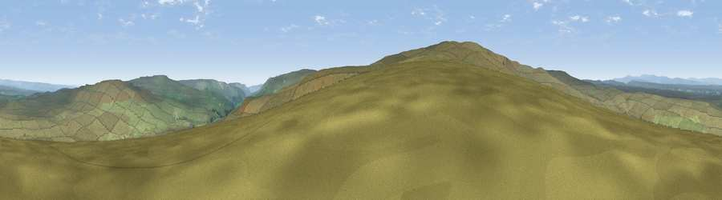

Viewpoint c10122_7904
#14556 in England · top 40% of its area beats it · —Where it is
The exact computed spot (NY 95225 06125). Click the marker for map links.
The view, rendered

A 360° render of this exact spot computed from the terrain model, tree cover and land cover — summer colours, afternoon light, calibrated against photographs of famous viewpoints. Real trees, hedges and buildings will differ in detail.
The panorama
Grey silhouette: terrain skyline in each direction (720 bearings, Earth curvature and refraction included). Dashed green: skyline with trees (+15 m) and buildings (+8 m) as obstacles. Blue strip: how far the ground is visible on each bearing.
Where the view opens
Wedge length = distance to the farthest visible ground on that bearing (vegetation-aware). Rings at 10, 25 and 50 km.
What fills the view
99% grassland ·
Angular shares of the visible panorama (visual magnitude), not map area. Landscape diversity 0.02 (0–1 Shannon).
Key numbers
More beautiful places nearby
The staircase of upgrades: each row has a higher view potential than everything closer. Driving times are estimates from straight-line distance, calibrated against real road routing — check an actual route before setting out.
| Place | Direction | Drive | Score |
|---|---|---|---|
| Viewpoint c10092_7857 | WSW · 3 km | ~7 min | 69.5 |
| Viewpoint c10154_8017 | ENE · 6 km | ~13 min | 70.0 |
| Viewpoint near Barningham | E · 8 km | ~16 min | 74.1 |
| Viewpoint near Cotterdale | SSW · 13 km | ~24 min | 74.4 |
| Viewpoint near Nateby | W · 15 km | ~27 min | 75.0 |
| Viewpoint c10024_7603 | WSW · 16 km | ~28 min | 76.9 |
| Viewpoint near Buckden | S · 27 km | ~44 min | 77.3 |
| Viewpoint near East Witton | SE · 28 km | ~45 min | 77.8 |
54.45050, -2.07515 · source: screening · position refined by local search. Computed location — check access rights before visiting.